Hermes Agent siap chat, tanpa terminal.
Pasang Hermes Agent dan CLIProxyAPI di GitHub Codespace Anda lewat Codespace AI Lab, buka secara privat dengan Tailscale, lalu sambungkan model AI dari akun Anda sendiri.
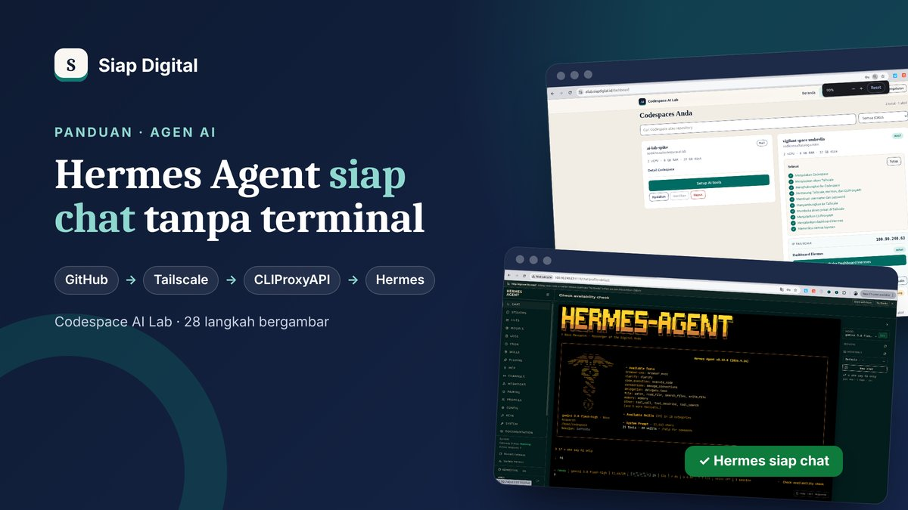
Alur produksi
Empat tahap, semuanya dari browser.
-
01 · Akun
Token GitHub & Tailscale
Dua token untuk membuat Codespace dan membuka akses privat
-
02 · Setup
Codespace AI Lab
Satu klik memasang Hermes, CLIProxyAPI, dan Tailscale
-
03 · Model
CLIProxyAPI
Login Antigravity dengan akun Google untuk mendapat model AI
-
04 · Chat
Hermes Agent
Pilih model, lalu ajak Hermes chat dari dashboard
Yang perlu disiapkan
Siapkan akun berikut sebelum mulai. Pembuatan token GitHub dan Tailscale dijelaskan di tutorial ini.
-
Akun GitHub
Untuk membuat token dan menjalankan Codespace. Siapkan minimal satu repository milik Anda.
-
Akun Tailscale
Untuk membuat API access token. Layanan hanya bisa dibuka dari perangkat di tailnet Anda.
-
Aplikasi Tailscale
Pasang di laptop atau HP yang dipakai membuka Hermes, lalu login dengan akun Tailscale yang sama.
-
Akun Google
Untuk login Antigravity di CLIProxyAPI, sumber model AI Hermes.
-
Browser desktop
Chrome atau Edge. Hindari perangkat bersama karena token disimpan di browser.
Daftar isi
Token, alamat email, dan URL login di tangkapan layar sudah kami buramkan.
Buka Codespace AI Lab
Codespace AI Lab adalah dashboard web yang memasang Hermes Agent dan CLIProxyAPI di GitHub Codespace Anda. Tidak perlu terminal.
-
Buka situs Codespace AI Lab
Buka ailab.siapdigital.id, lalu klik Buka Dashboard (atau Mulai sekarang).
Buka Codespace AI Lab ↗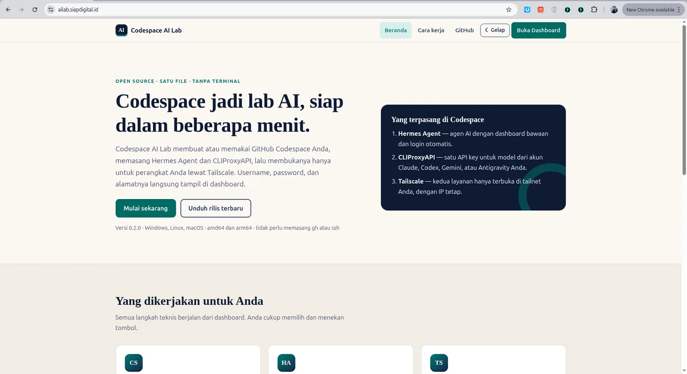
Beranda Codespace AI Lab -
Buka dialog Hubungkan akun
Saat pertama kali masuk dashboard, dialog Hubungkan akun muncul. Jika tidak, klik Pengaturan di kanan atas. Dialog ini meminta dua token: GitHub dan Tailscale.
Perhatian: Kedua token disimpan tanpa enkripsi di browser ini dan tetap ada setelah browser ditutup. Jangan gunakan perangkat bersama.
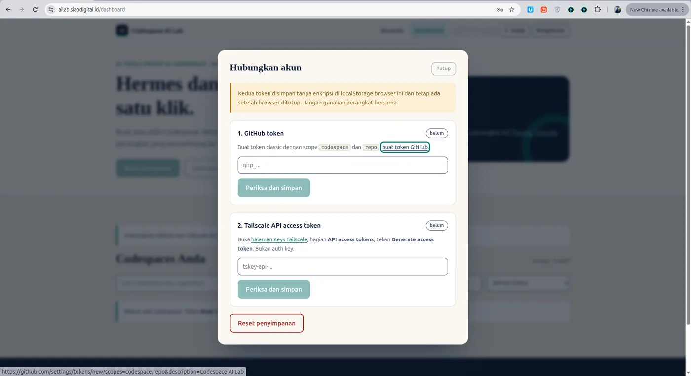
Dialog Hubungkan akun


Buat token GitHub
Token classic dengan scope codespace dan repo dipakai untuk membuat dan mengelola Codespace Anda.
-
Klik buat token GitHub
Di dialog, klik link buat token GitHub. Halaman New personal access token (classic) terbuka dengan nama dan scope yang sudah diisi. Atur Expiration sesuai kebutuhan.
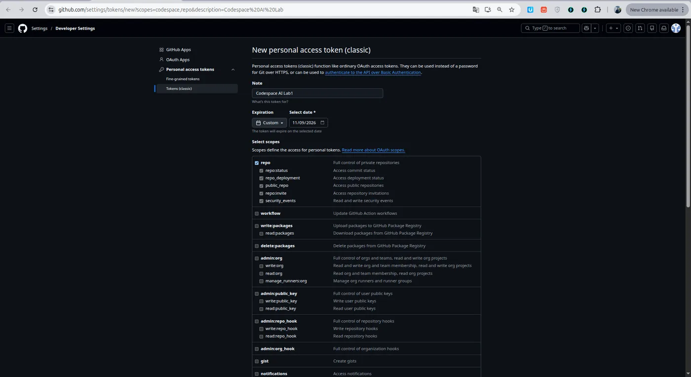
Form token classic, scope repo sudah tercentang -
Pastikan scope codespace tercentang, lalu Generate token
Gulir ke bawah dan pastikan codespace juga tercentang. Klik Generate token.
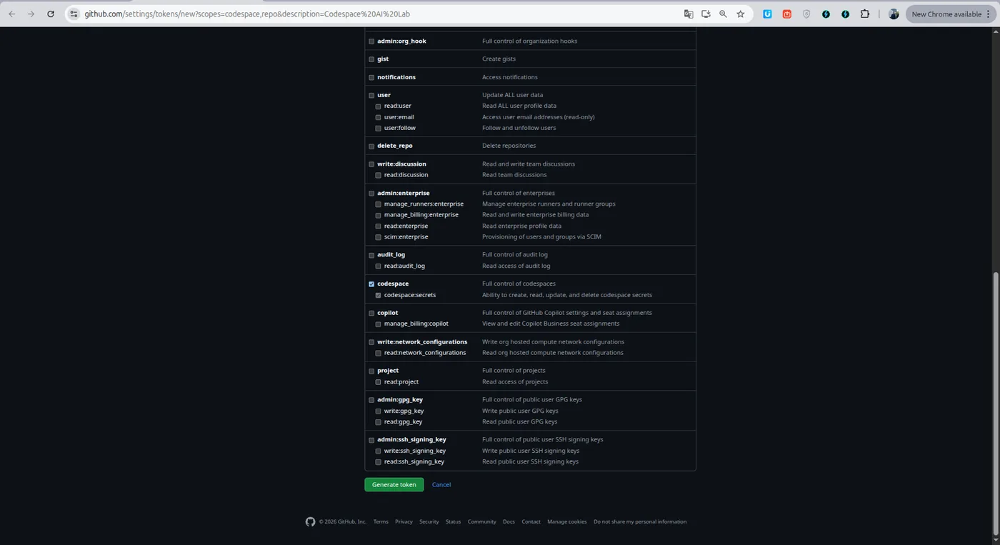
Scope codespace tercentang -
Salin token
Token yang diawali
ghp_hanya tampil sekali. Klik ikon salin di sebelahnya.Perhatian: Token ini sama dengan kata sandi akun GitHub Anda. Jangan kirim ke siapa pun atau tampilkan di screenshot. Jika bocor, klik Delete dan buat token baru.
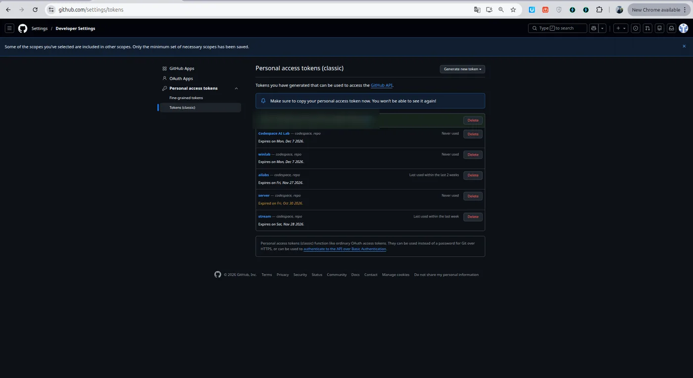
Token baru (diburamkan) -
Tempel dan simpan token GitHub
Kembali ke dialog, tempel token di kolom 1. GitHub token, lalu klik Periksa dan simpan. Jika valid, label berubah menjadi centang dengan username GitHub Anda.
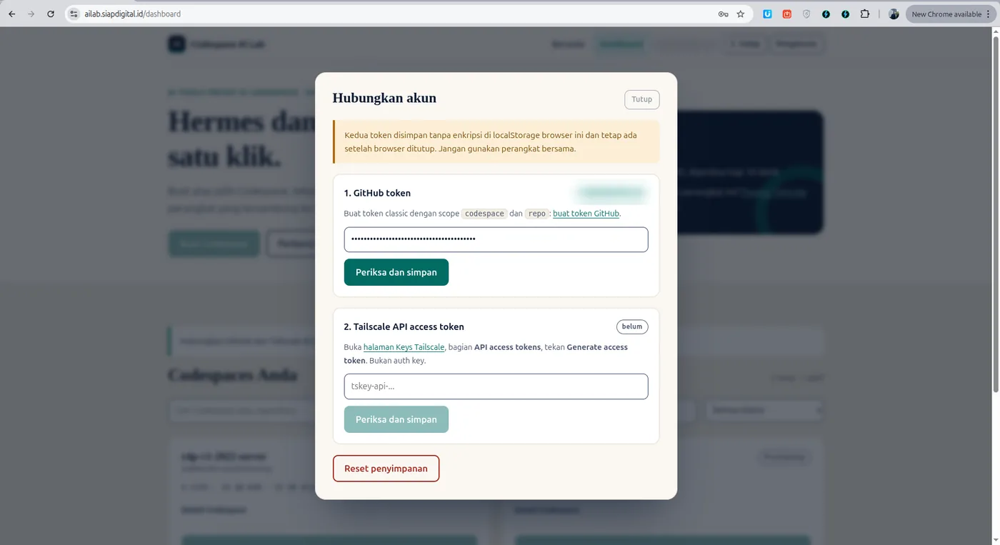
Token GitHub tersimpan


Buat token Tailscale
Tailscale membuat Hermes dan CLIProxyAPI hanya bisa dibuka dari perangkat Anda sendiri, tanpa port publik.
-
Buka halaman Keys Tailscale
Di dialog, klik link halaman Keys Tailscale (login atau daftar dulu jika belum punya akun). Gulir ke bagian API access tokens, lalu klik Generate access token…
Tips: Yang dibutuhkan adalah API access token, bukan Auth key.
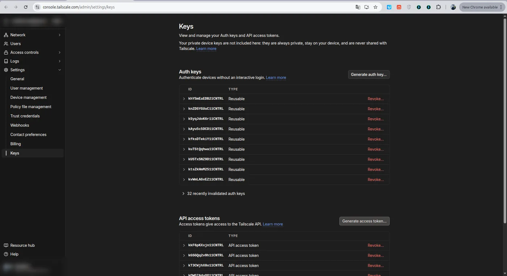
Halaman Keys di konsol Tailscale -
Isi deskripsi dan masa berlaku
Isi Description, misalnya
ailab, dan jumlah hari masa berlaku (1–90 hari). Klik Generate access token.Tips: Setelah token kedaluwarsa, dashboard memberi peringatan dan Anda perlu membuat token baru.
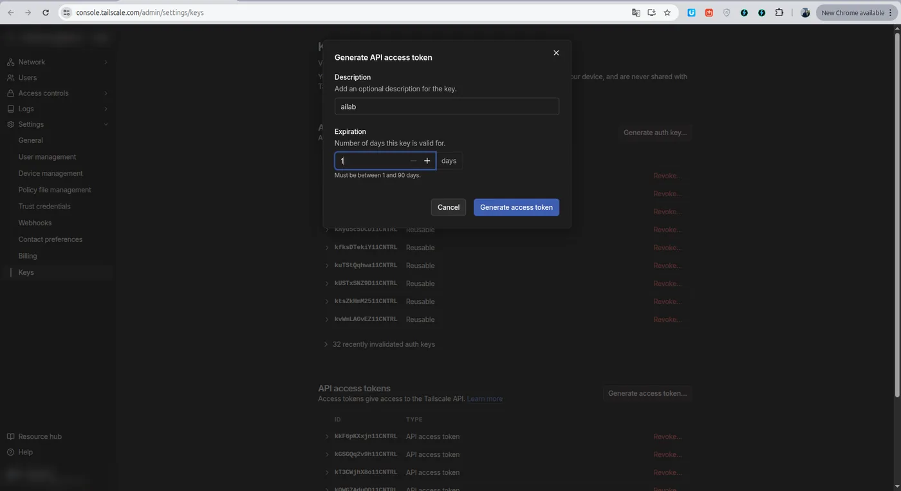
Dialog Generate API access token -
Salin token Tailscale
Token diawali
tskey-api-dan hanya tampil sekali. Klik ikon salin, lalu Done.Perhatian: Perlakukan token ini seperti kata sandi. Jika bocor, klik Revoke di halaman Keys.
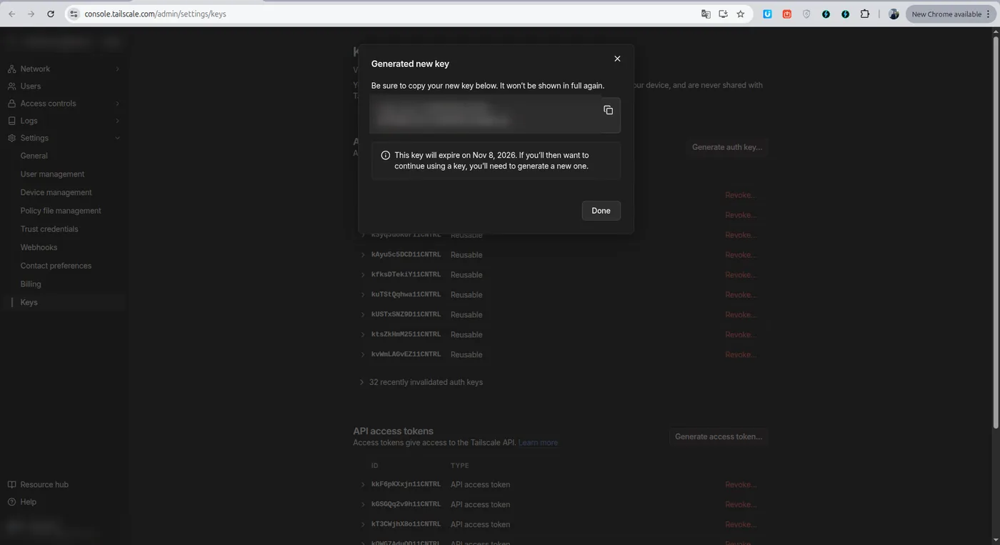
Token baru (diburamkan) -
Tempel dan simpan token Tailscale
Tempel di kolom 2. Tailscale API access token, lalu klik Periksa dan simpan. Setelah keduanya tersimpan, tutup dialog.
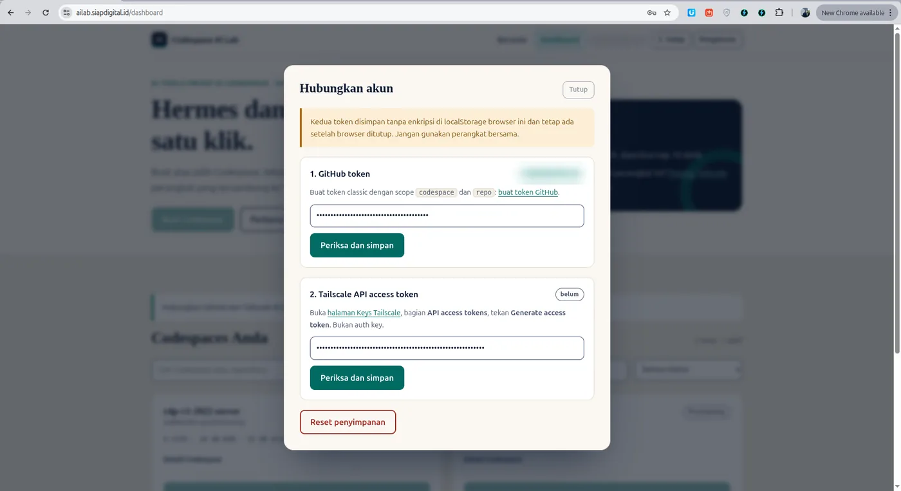
Kedua token sudah diisi


Buat Codespace dan pasang AI tools
Dashboard membuat Codespace, lalu memasang Tailscale, Hermes Agent, dan CLIProxyAPI secara otomatis.
-
Klik Buat Codespace
Di dashboard, panel Ringkasan menampilkan jumlah Codespace Anda. Klik Buat Codespace.
Tips: Belum memasang Tailscale di perangkat ini? Pasang sekarang dan login dengan akun Tailscale yang sama. Tanpa itu, alamat Hermes tidak bisa dibuka.
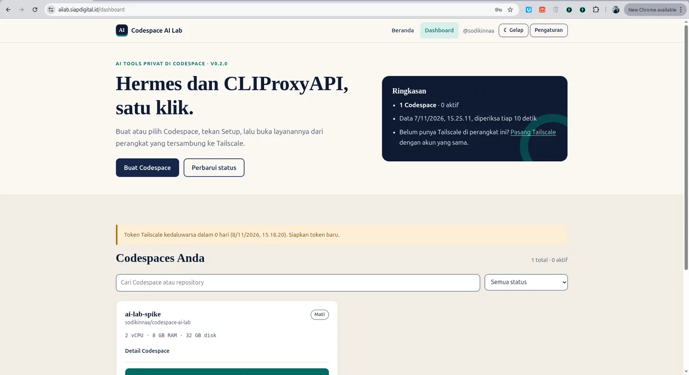
Dashboard Codespace AI Lab -
Pilih repository, lalu pasang
Pilih Repository milik Anda, isi Branch bila perlu (kosong berarti
main), lalu klik Buat dan pasang AI tools.Tips: Codespace memakai mesin standar 2-core dan berhenti otomatis setelah 30 menit tidak dipakai. Untuk Codespace yang sudah ada, cukup klik Setup AI tools di kartunya.
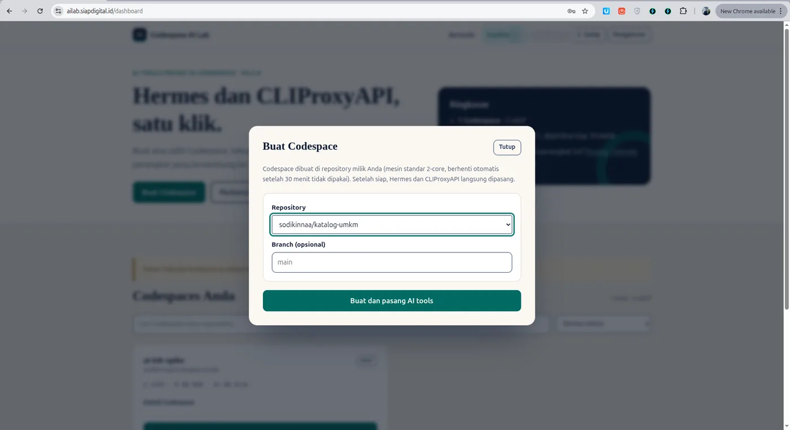
Dialog Buat Codespace -
Tunggu proses pemasangan
Kartu Codespace menampilkan progres per langkah, dari Menyalakan Codespace sampai Memeriksa semua layanan. Biasanya selesai dalam beberapa menit. Biarkan tab tetap terbuka.
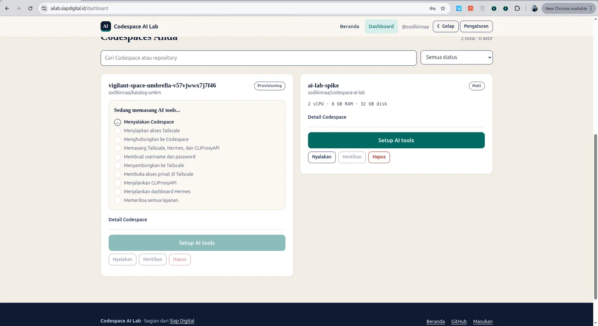
Progres Sedang memasang AI tools -
Setup selesai
Semua langkah bercentang hijau. Kartu menampilkan IP Tailscale, tombol Buka Dashboard Hermes, serta username dan password Hermes. Gunakan tombol Lihat dan Salin untuk password.
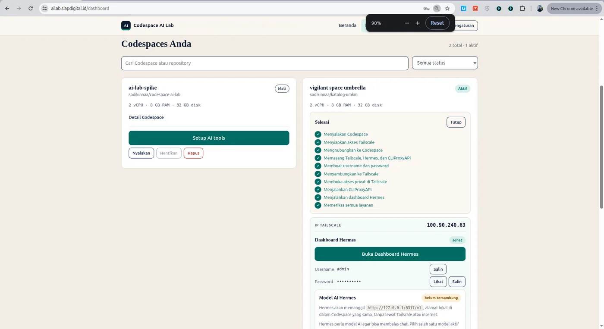
Status Selesai dengan IP Tailscale dan kredensial Hermes -
Coba login ke dashboard Hermes
Klik Buka Dashboard Hermes, lalu masukkan username dan password dari kartu dan klik Sign in. Hermes belum bisa chat sebelum modelnya disambungkan di bagian berikutnya.
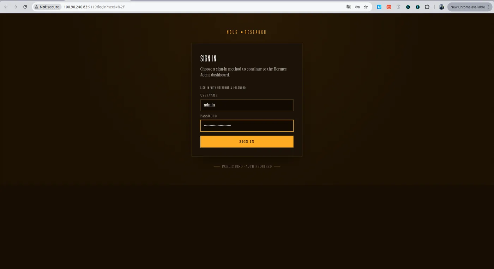
Halaman Sign in Hermes Agent


Sambungkan model AI lewat CLIProxyAPI
Hermes butuh model AI. CLIProxyAPI mengambil model dari akun Anda sendiri. Di tutorial ini kita memakai login Antigravity dengan akun Google.
-
Salin kunci panel dan buka CLIProxyAPI
Di kartu Codespace, bagian CLIProxyAPI, klik Salin pada Kunci panel. Lalu klik Buka Panel CLIProxyAPI.
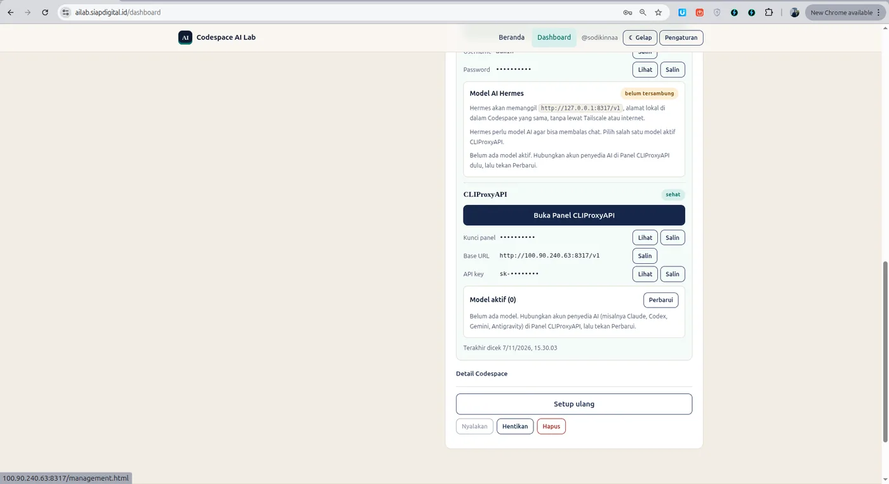
Bagian CLIProxyAPI di kartu Codespace -
Login ke Management Center
Tempel kunci panel di kolom Management Key, lalu klik Login.
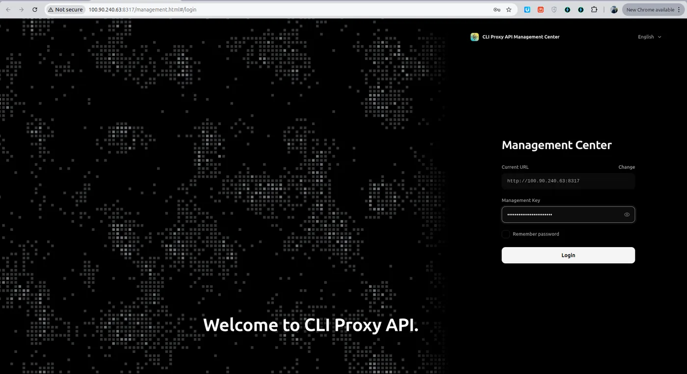
Halaman login CLI Proxy API Management Center -
Buka OAuth Login, pilih Antigravity
Di menu kiri, klik OAuth Login. Pada kartu Antigravity, klik tombol +.
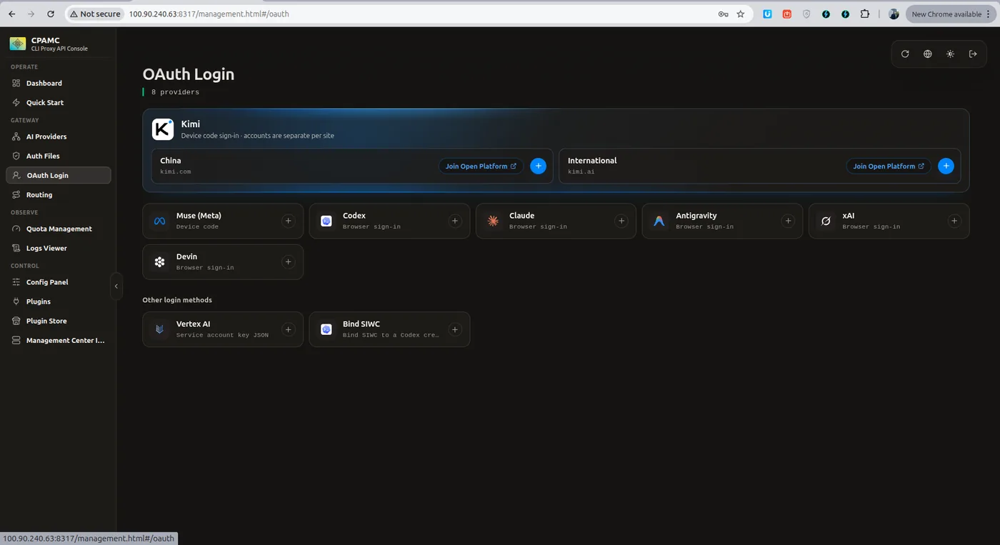
Daftar penyedia di OAuth Login -
Klik Open Link
Dialog Antigravity OAuth muncul. Klik Open Link untuk membuka halaman login Google di tab baru. Biarkan dialog ini tetap terbuka.
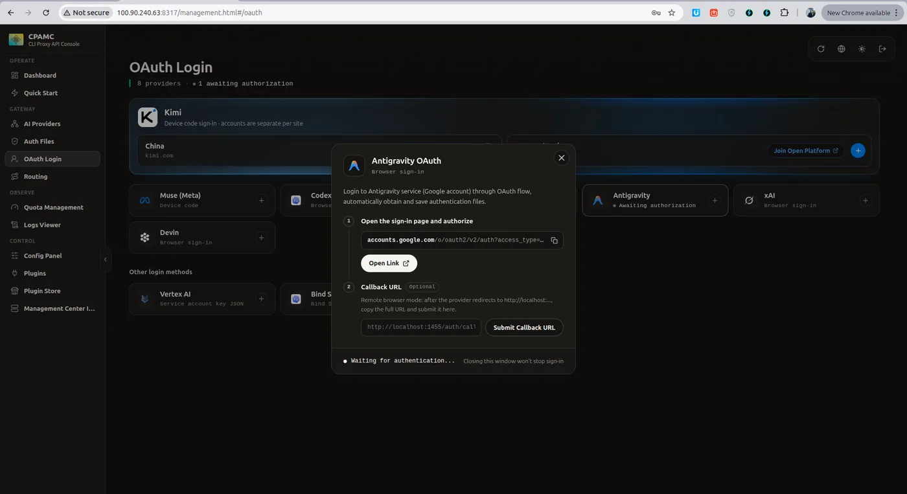
Dialog Antigravity OAuth -
Pilih akun Google dan klik Login
Pilih akun Google yang ingin dipakai, lalu di halaman konfirmasi klik Login.
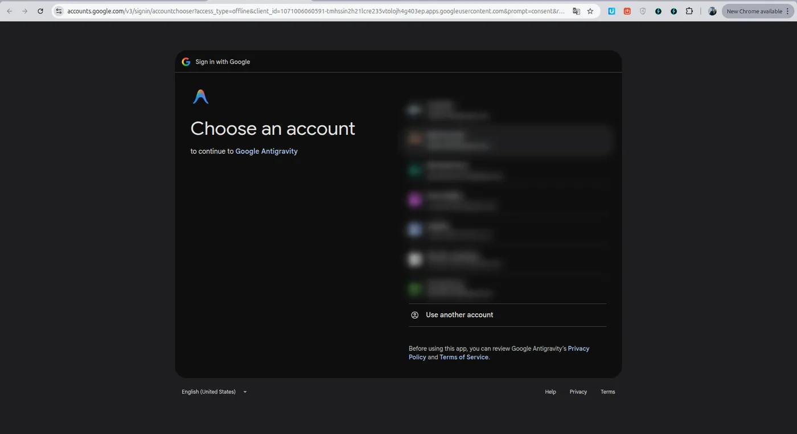
Pilih akun Google (daftar akun diburamkan) 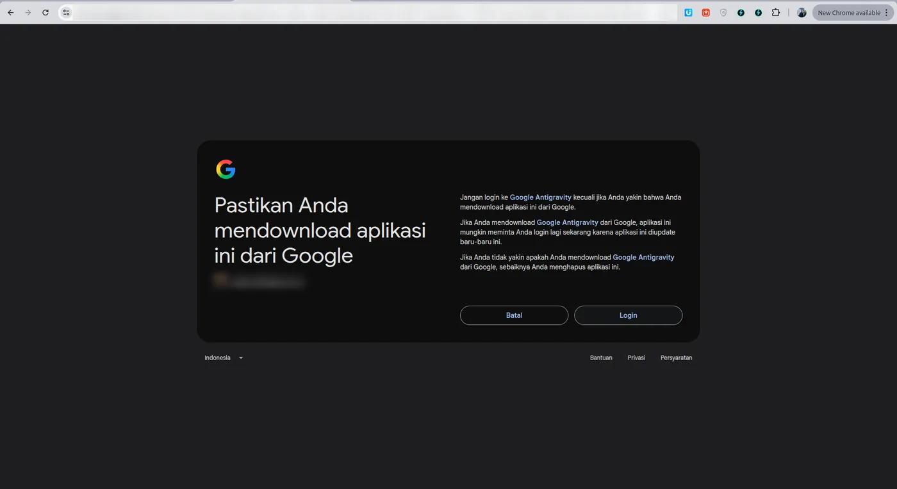
Konfirmasi login Google Antigravity -
Salin URL dari address bar
Browser lalu menampilkan This site can’t be reached di alamat
localhost. Ini normal. Klik address bar dan salin seluruh URL-nya.Perhatian: URL ini berisi kode login akun Google Anda. Tempel hanya ke panel CLIProxyAPI milik Anda, jangan ke tempat lain.
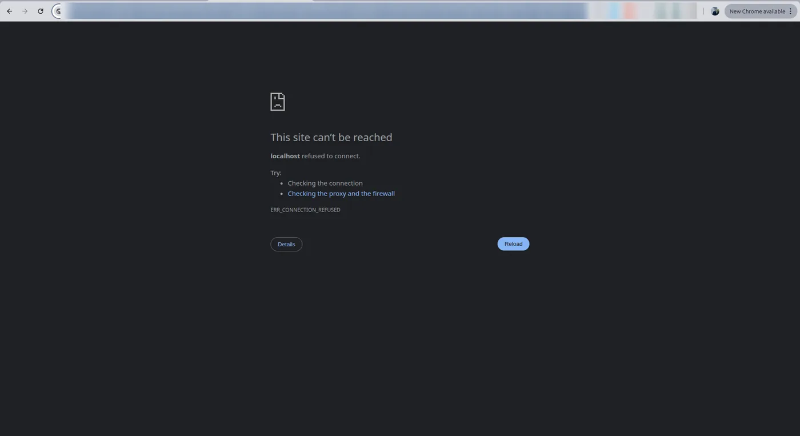
Halaman localhost refused to connect (URL diburamkan) -
Tempel di Callback URL dan submit
Kembali ke tab CLIProxyAPI. Tempel URL tadi di kolom Callback URL, lalu klik Submit Callback URL.
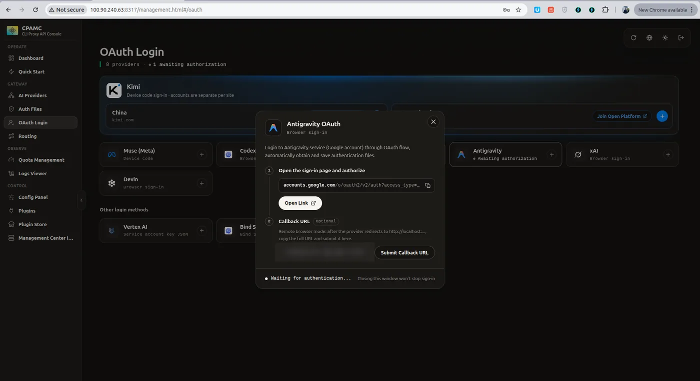
URL ditempel di Callback URL 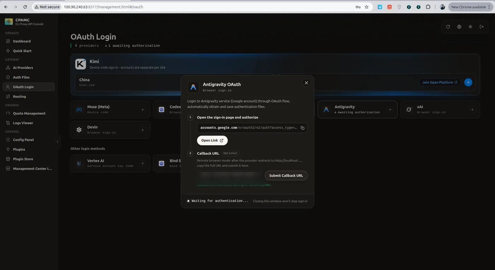
Callback terkirim, menunggu autentikasi -
Autentikasi berhasil
Muncul pesan Authentication successful! Kredensial Antigravity tersimpan di Auth Files CLIProxyAPI. Tutup dialog.
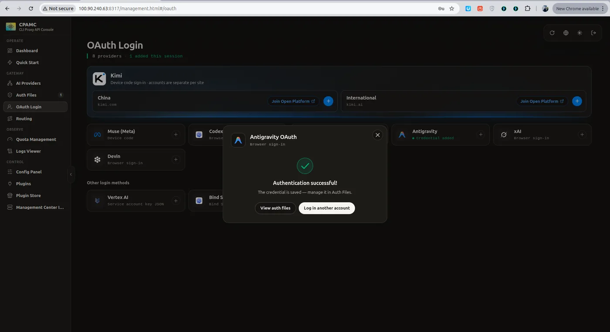
Authentication successful


Pilih model dan mulai chat
Langkah terakhir: pilih model untuk Hermes, lalu coba chat.
-
Perbarui daftar model aktif
Kembali ke dashboard Codespace AI Lab. Di bagian Model aktif, klik Perbarui.
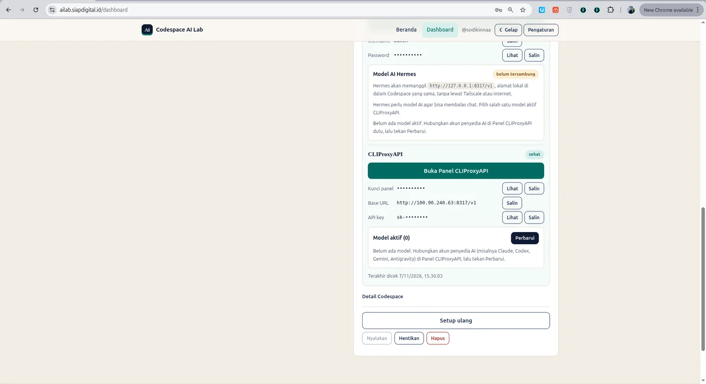
Model aktif masih kosong sebelum diperbarui -
Pilih model, lalu Sambungkan
Daftar model dari Antigravity muncul. Di bagian Model AI Hermes, pilih model, misalnya
gemini-3.8-flash-high · antigravity, lalu klik Sambungkan.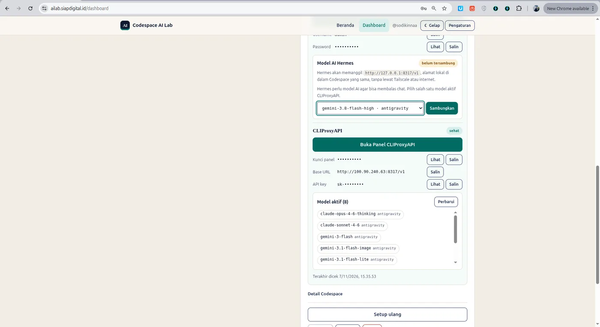
Memilih model untuk Hermes -
Pastikan statusnya tersambung
Label Model AI Hermes berubah menjadi tersambung lewat CLIProxyAPI lokal dan menampilkan nama model yang dipilih.
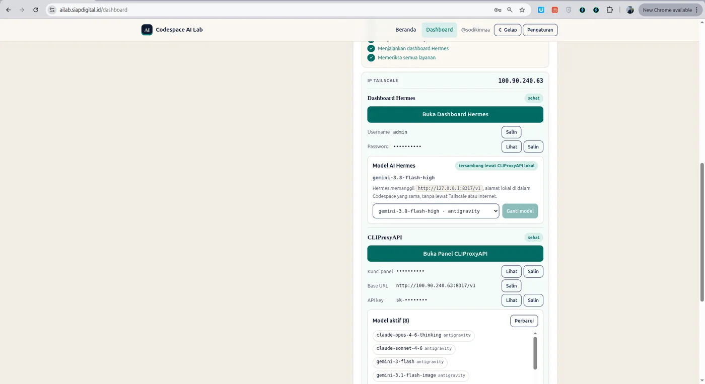
Model tersambung -
Cek model di dashboard Hermes
Buka dashboard Hermes, lalu menu Profiles. Pastikan profil default memakai model yang tadi dipilih.
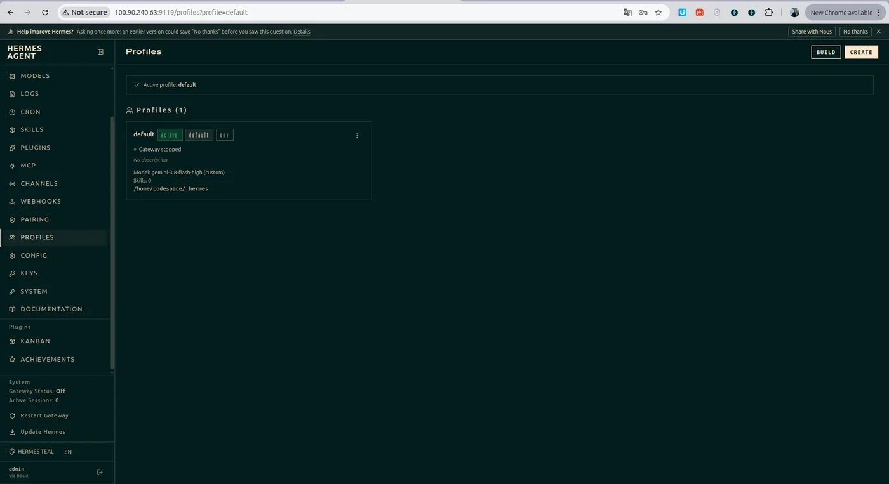
Menu Profiles di Hermes Agent -
Coba chat dengan Hermes
Buka menu Chat dan kirim pesan, misalnya “halo, perkenalkan dirimu”. Jika Hermes membalas, lab AI Anda sudah siap dipakai.
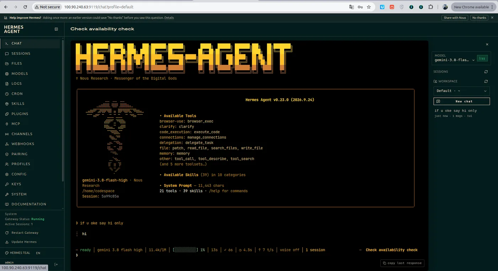
Hermes Agent membalas chat


Tanya jawab
Dashboard Hermes tidak bisa dibuka.
Alamatnya memakai IP Tailscale (100.x.x.x), jadi hanya bisa dibuka dari perangkat yang menjalankan aplikasi Tailscale dengan akun yang sama. Pastikan Tailscale menyala, lalu muat ulang halaman. Pastikan juga Codespace sedang menyala.
Codespace mati sendiri. Apakah harus setup ulang?
Tidak. Codespace berhenti otomatis setelah 30 menit tidak dipakai. Klik Nyalakan di kartunya. Layanan kembali dengan IP dan password yang sama.
Daftar Model aktif tetap kosong.
Login penyedia di CLIProxyAPI belum selesai. Ulangi langkah OAuth Login dan pastikan muncul Authentication successful, lalu klik Perbarui lagi.
Muncul peringatan token Tailscale hampir kedaluwarsa.
Buat API access token baru di halaman Keys Tailscale, lalu tempel di Pengaturan → Hubungkan akun dan klik Periksa dan simpan.
Selain Antigravity, penyedia apa yang bisa dipakai?
Menurut halaman Codespace AI Lab, CLIProxyAPI bisa memakai model dari akun Claude, Codex, Gemini, atau Antigravity Anda. Langkahnya mirip: pilih penyedia di OAuth Login, selesaikan login, lalu perbarui model aktif. Gunakan sesuai ketentuan layanan masing-masing penyedia.
Bagaimana menghapus semuanya?
Hapus Codespace dari kartunya, klik Reset penyimpanan di dialog Hubungkan akun, lalu hapus token di GitHub (Delete) dan Tailscale (Revoke).
Tampilan tiap layanan bisa berubah sewaktu-waktu. Tangkapan layar diambil pada November 2026.